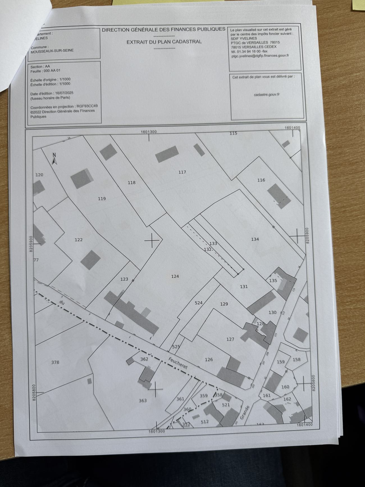
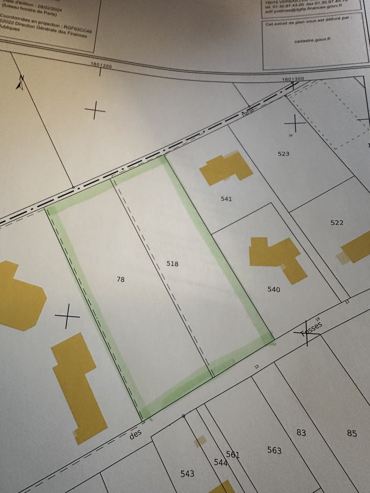
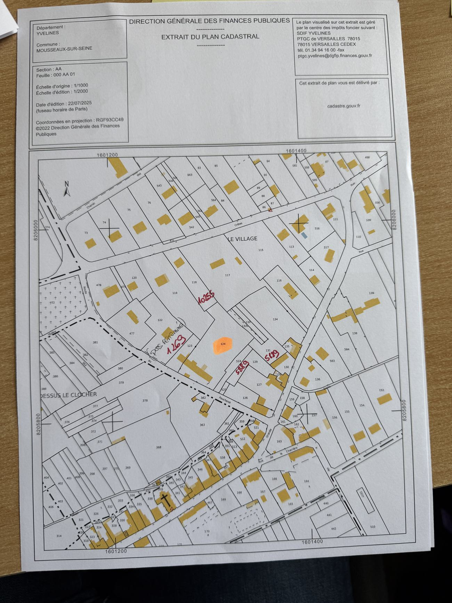
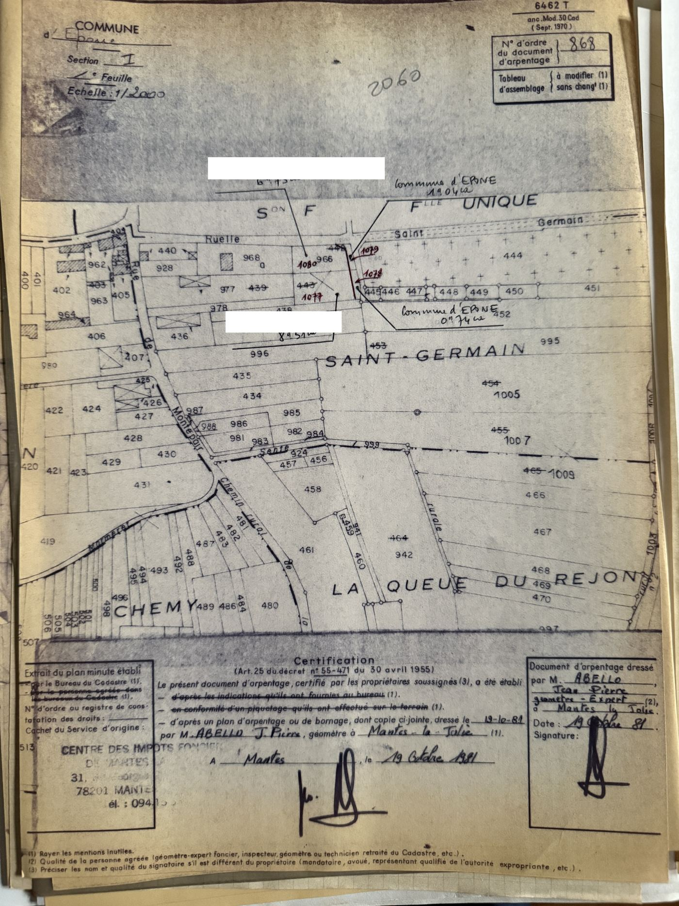
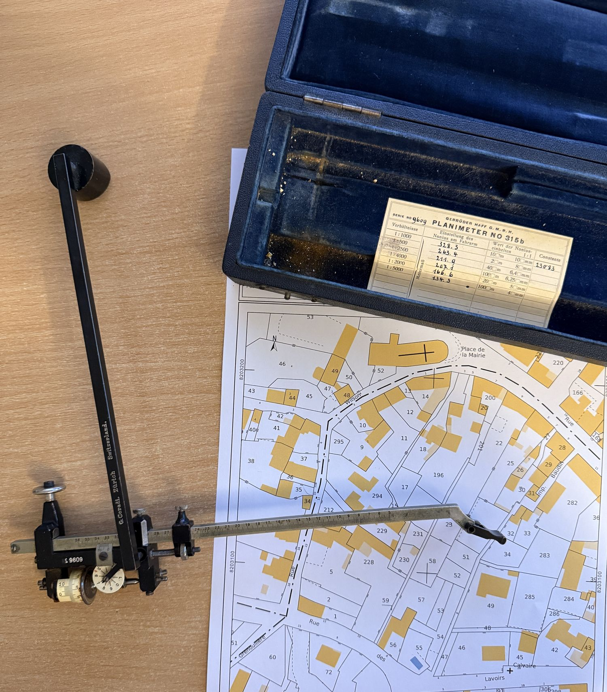
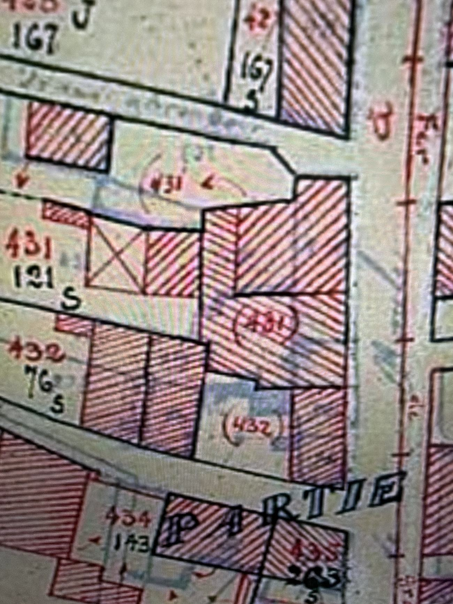

Qu'est-ce qu'un document d'arpentage ?
Son nom officiel est document modificatif du parcellaire cadastral, en abrégé DMPC. C'est la pièce qui fait passer une parcelle de son état ancien à son état nouveau dans les registres du cadastre.
Concrètement, il montre l'état avant et l'état après : la parcelle d'origine, le trait de division, les nouvelles parcelles, leurs contenances. Une fois déposé, le service du cadastre le vérifie et attribue aux nouvelles parcelles leurs numéros définitifs.
Sans lui, la division n'existe que sur le papier du géomètre. Le cadastre continue d'afficher l'ancienne parcelle, et le notaire ne peut pas désigner précisément ce qui est vendu.
Avant, après



Quand est-il obligatoire ?
Dès que la position des limites d'une parcelle cadastrale change, et que ce changement doit être publié.
- La vente d'une partie de terrainVous ne vendez pas la parcelle entière mais un morceau : il faut créer la parcelle vendue avant que l'acte puisse la désigner.
- La division d'une propriétéDétacher un lot, partager entre héritiers, séparer une maison de son jardin : chaque nouveau lot devient une parcelle avec son propre numéro.
- La réunion de parcellesL'opération inverse : plusieurs parcelles contiguës d'un même propriétaire n'en forment plus qu'une.
- Un lotissementLe découpage en lots à bâtir se traduit au cadastre par autant de parcelles nouvelles.
- Une expropriation, un échange, une régularisationToute opération qui déplace une limite dans les registres suppose la même pièce.
Qui peut l'établir
Le document d'arpentage ne peut être dressé que par une personne agréée à cet effet — en pratique, le géomètre-expert.
Ce n'est pas une formalité de dessin. Il suppose l'analyse des titres, l'examen des archives, un levé du terrain et le calcul des contenances.
Le document d'arpentage constate et traduit au cadastre une modification parcellaire ; il ne fixe pas à lui seul la limite de propriété et ne vaut pas bornage — c'est l'objet d'un acte distinct (voir l'encart plus haut). Sa valeur tient à la rigueur de son établissement et à la vérification qu'en fait le service du cadastre avant numérotage.
Le rôle du géomètre-expertCe que contient le dossier
Un document d'arpentage n'est pas une feuille unique. Il réunit :
- Le formulaire 6463-NLa « chemise » du dossier : quatre pages qui portent la désignation des propriétaires avant et après, la situation des parcelles d'origine, celle des parcelles nouvelles et leurs contenances. C'est la partie littérale.
- L'extrait du plan cadastralLe fond de plan délivré par la Direction générale des finances publiques, sur lequel figure la modification.
- Le plan de la modificationLa partie graphique établie par le géomètre-expert : l'état avant et l'état après, avec les cotes du levé. C'est elle qui sera reportée au plan cadastral.
- Le cas échéant, le plan de division ou le procès-verbal de bornageLorsque la limite nouvelle a été fixée contradictoirement, ces pièces accompagnent le dossier.
Le formulaire a changé de numéro au fil du temps — les documents des années 1970 et 1980 portent la référence 6462 T, ancien modèle 30 Cad — mais sa fonction est restée la même.

Comment ça se passe
- Étude préalableTitres de propriété, archives du cabinet, plans antérieurs, situation cadastrale actuelle.
- Levé du terrainLes limites existantes, le bâti, les clôtures, les accès. Rien ne se dessine depuis le bureau seul.
- Établissement du documentLe plan de la modification, les contenances calculées, le formulaire renseigné.
- Dépôt au service du cadastreLe document est déposé pour vérification et numérotage.
- Retour avec les numéros définitifsLes nouvelles parcelles existent officiellement. Le notaire peut désigner le bien.
Saviez-vous que la plupart des contenances inscrites dans les titres de propriété ont été calculées avec un outil mécanique ?
Et non par mesure sur le terrain. Les contenances des parcelles, inscrites au cadastre puis répercutées dans les titres de propriété, ont pour beaucoup été calculées avec un planimètre à roulettes, comme celui de la photographie.
Cet instrument a été utilisé massivement par le service du cadastre entre 1880 et 1960 pour établir les contenances des parcelles.
Comment fonctionnait le planimètre à roulettes :
- PositionnementUne extrémité du bras est fixée à l'extérieur de la parcelle à mesurer.
- TraçageL'opérateur suit le périmètre de la parcelle avec le pointeur.
- Lecture des chiffresEn avançant, la roulette enregistre une série de valeurs correspondant aux déplacements perpendiculaires.
- Calcul de la contenanceLa différence entre la valeur finale et la valeur initiale, multipliée par un coefficient propre à l'échelle du plan, donne directement la contenance de la parcelle.
Pourquoi cela entraîne des écarts de surface : trois causes se cumulent. La précision de l'opérateur — une légère déviation dans le suivi du contour se répercute sur le calcul. L'échelle du plan, dont dépend le coefficient appliqué. Et les arrondis, les valeurs ayant souvent été ajustées à la main.
Résultat : les contenances cadastrales ne sont pas toujours identiques aux mesures réalisées sur le terrain par un géomètre-expert, qui emploie, lui, le mesurage direct et le bornage contradictoire. Cet outil a façonné des millions de contenances cadastrales — l'image parle d'elle-même.

Quand le cadastre a été refait

Le plan cadastral n'a pas toujours eu la forme qu'on lui connaît. Le plan dit napoléonien, levé au XIXe siècle, a été progressivement remplacé par le plan rénové.
À cette occasion, les parcelles ont été renumérotées. Une propriété peut donc porter un numéro dans un acte ancien et un tout autre aujourd'hui, sans que rien n'ait bougé sur le terrain.
Retrouver la correspondance entre les deux numérotations est un travail d'archives — celui que nous menons à chaque dossier ancien. C'est aussi la raison pour laquelle un titre de propriété ne se lit jamais seul.
Le fonds d'archives du cabinetLes textes applicables
Les références qui commandent la matière, pour ceux qui souhaitent remonter à la source.
« Tout changement de limites d'une parcelle, c'est-à-dire d'une surface affectée d'un numéro de plan cadastral, notamment par suite de division, lotissement, partage, doit être constaté par un document d'arpentage. »
BOFiP, BOI-CAD-MAJ-10-10 — doctrine administrative reprenant l'article 25 du décret n° 55-471 du 30 avril 1955- Article 25L'obligation elle-même : tout changement de limites parcellaires doit être constaté par un document d'arpentage.
- Article 26 et suivantsLes caractéristiques techniques du document : procès-verbal de délimitation, esquisse, formalisme du plan.
- Article 30Les documents d'arpentage ne peuvent être dressés, dans la forme prescrite, que par des personnes agréées à cet effet.
Le formalisme du dessin est lui-même encadré : sur le fond de plan cadastral, l'administration impose un code de couleurs — noir pour la situation ancienne, vert pour les radiations, rouge pour les éléments nouveaux à faire figurer sur le plan cadastral, violet pour les indications de calcul qui ne figureront pas sur le plan définitif (lignes d'opérations, cotes de report), gris ou crayon à papier pour l'identité des propriétaires. C'est ce code que l'on retrouve sur le document de 1981 reproduit plus haut : les numéros nouveaux portés en rouge.
Les questions qu'on nous pose
Le document d'arpentage vaut-il bornage ?
Non. Ce sont deux actes distincts. Le document d'arpentage met à jour le plan cadastral, qui est un document fiscal. Le bornage détermine et matérialise la limite de propriété, contradictoirement avec les voisins. Une division peut donner lieu aux deux, mais l'un ne remplace pas l'autre.
Puis-je le faire moi-même ou le demander à la mairie ?
Non. Le document ne peut être dressé que par une personne agréée à cet effet — en pratique, le géomètre-expert. La mairie ne délivre pas ce document ; le service du cadastre le vérifie et le numérote, il ne le rédige pas.
La superficie de mon titre ne correspond pas à celle que vous mesurez. Qui a raison ?
Les deux chiffres sont exacts dans leur ordre. La contenance du titre vient le plus souvent d'un calcul graphique ancien, au planimètre, sur un plan à petite échelle. La superficie que nous mesurons résulte d'un levé sur le terrain à partir de limites déterminées. C'est cette dernière qui décrit la réalité de votre propriété.
Peut-on consulter les anciens documents d'arpentage ?
Oui, et de plus en plus facilement. L'Ordre des géomètres-experts et la Direction générale des finances publiques mènent depuis 2022 un chantier de numérisation de ces documents, consultables sur le portail public Géofoncier. Le cabinet conserve par ailleurs ses propres pièces, dont certaines remontent aux années 1920.
Combien coûte un document d'arpentage ?
Cela dépend du travail qu'il suppose en amont : recherche d'archives, levé, présence ou non d'un bornage à réaliser, nombre de parcelles concernées. Le document lui-même n'est qu'une pièce du dossier. Nous établissons un devis après avoir examiné votre situation.
Une division à préparer ?
Le cabinet intervient à Mantes-la-Jolie, à Limay et dans toute la vallée de la Seine. Décrivez-nous votre projet : nous vous dirons quelles pièces sont nécessaires et dans quel ordre les engager.
Sources : décret n° 55-471 du 30 avril 1955 relatif à la rénovation et à la conservation du cadastre, articles 25, 26 et suivants et 30 ; Bulletin officiel des finances publiques (BOFiP), séries BOI-CAD-MAJ-10-10 (généralités), BOI-CAD-MAJ-10-20-10 (formalisme et code des couleurs) et BOI-CAD-MAJ-10-20-20 (confection) ; dispositif e-DA, Ordre des géomètres-experts et Direction générale des finances publiques.